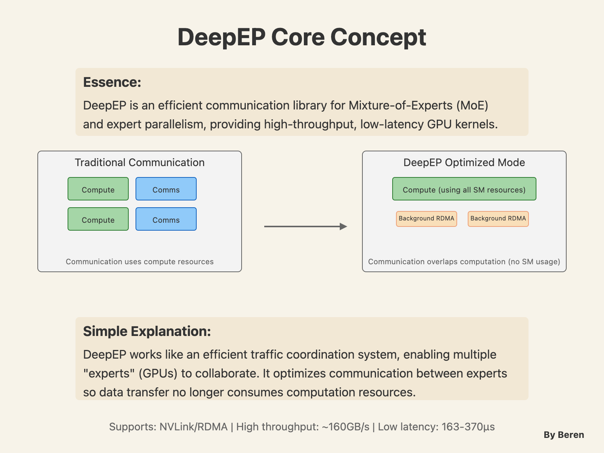

Here we are again, folks, and we're back with another interesting post on DeepSeek's AI infra approach.
This week, DeepSeek AI took an extraordinary step by open-sourcing critical components of their AI infrastructure stack during their aptly named "OpenSourceWeek." I've been eagerly following these releases, since I'm always curious about architectural design principles, as well as AI systems design. I realized that this wasn't just another PR exercise (well it could be), but a technical showcase revealing the building blocks that power their latest models.
Over six days, the team released eight repositories spanning compute optimization, parallelism techniques, and data infrastructure. What makes this particularly interesting is how these components work together, forming a comprehensive stack for training and deploying trillion-parameter language models.
Let me walk you through what they've shared, why it matters, and what it reveals about the directions in AI infrastructure.
Compute Optimization Fundamentals
The first and third days focused on bare-metal optimizations targeting the computational bottlenecks in large language models. FlashMLA and DeepGEMM address two critical operations in neural network computation: attention mechanisms and matrix multiplication.
FlashMLA launched on day one, delivering a highly optimized kernel for multi-head linear attention (MLA). To provide more contexts, attention mechanisms are the computational heart of modern language models, and linear attention variants are increasingly important for handling long sequences efficiently.
The repository reveals meticulous GPU-level optimizations for Hopper architecture, supporting both BF16 and FP16 precision with clever memory management through paged KV caching (with block size 64). The performance numbers are impressive: 3000 GB/s in memory-bound configurations and 580 TFLOPS in compute-bound scenarios on H800 GPUs.
Two days later, DeepGEMM arrived, tackling the general matrix multiplication (GEMM) operations that form the computational backbone of neural networks. DeepGEMM stands out with its focused design philosophy: clean, efficient FP8 GEMMs with fine-grained scaling and a remarkably lightweight implementation (~300 lines of core code).
Despite being lightweight, DeepGEMM incorporates advanced techniques like just-in-time (JIT) compilation, warp specialization, and clever optimizations for Hopper GPU architectures. The performance matches or exceeds expert-tuned libraries across various matrix shapes.
DeepGEMM shows up to 2.7x speedup compared to CUTLASS 3.6 for certain matrix shapes. Now it's not hard to get the point of how specialized implementations can dramatically outperform general-purpose solutions for specific workloads.
Parallelism Strategies for Multi-Expert Models
The second and fourth days unveiled DeepSeek's approaches to training and deploying massive models across distributed hardware.
DeepEP (day two) tackles the communication bottlenecks in expert parallelism, a technique that's becoming increasingly central to state-of-the-art MoE models. Expert parallelism distributes different neural network "experts" across multiple GPUs, but this creates unique communication patterns that traditional frameworks handle suboptimally.
DeepEP offers both high-throughput kernels for training and prefilling, plus specialized low-latency kernels for inference decoding. They provided an innovative approach to computation-communication overlap, by developing a hook-based method that doesn't consume any GPU streaming multiprocessors (SMs), allowing computation to proceed unimpeded.
The performance data is compelling: intranode dispatch/combine operations reach 153-158 GB/s (NVLink bound), while internode operations achieve 43-47 GB/s (RDMA bound). For latency-sensitive inference, they've driven down communication overhead to just 163-194 microseconds for dispatch operations.
Day four expanded the parallelism toolkit with three related projects:
- DualPipe introduces a bidirectional pipeline parallelism algorithm that achieves full overlap of forward and backward computation-communication phases while reducing pipeline bubbles.
- EPLB (Expert Parallelism Load Balancer) intelligently distributes experts across GPUs to balance computational load, employing either hierarchical or global balancing strategies depending on the workload.
- Profile Data provides real-world profiling data demonstrating their computation-communication overlap strategies in action, revealing the careful orchestration happening under the hood.
Core Data Infrastructure for AI Workloads
The final day brought two complementary data infrastructure projects: 3FS and smallpond. These address the often-overlooked challenge of efficiently managing the massive datasets required for training and model serving.
3FS (Fire-Flyer File System) is a high-performance distributed file system designed specifically for AI workloads. It utilizes modern SSDs and RDMA networks to provide a shared storage layer with strong consistency guarantees. The system achieves remarkable performance: 6.6 TiB/s aggregate read throughput on a cluster of 180 storage nodes, each equipped with 2×200Gbps InfiniBand NICs and sixteen 14TiB NVMe SSDs.
3FS focus on diverse AI workloads, from data preparation and loading to checkpointing and KV caching for inference. The disaggregated architecture combines the throughput of thousands of SSDs with the network bandwidth of hundreds of nodes, enabling applications to access storage resources regardless of physical location.
Its companion, smallpond, is a lightweight data processing framework built on DuckDB and 3FS. It provides a Python API for high-performance data processing that can scale to petabyte-level datasets. In tests with the GraySort benchmark, smallpond sorted 110.5 TiB of data in just over 30 minutes, achieving a throughput of 3.66 TiB/min.
Together, these data infrastructure components complete DeepSeek's open source stack, a pretty organic and comprehensive combo of computation optmization, parallism, and data infrastructure.
| Layer | Components | Key Features | Impact |
|---|---|---|---|
| Compute Optimization | FlashMLA, DeepGEMM | Optimized CUDA kernels for attention and matrix multiplication; FP8/BF16/FP16 support | 1.5-2.7x speedup on key operations |
| Parallelism | DeepEP, DualPipe, EPLB | Expert parallelism communication, pipeline parallelism, load balancing | Efficient scaling across hundreds of GPUs with minimal overhead |
| Data Infrastructure | 3FS, smallpond | Distributed file system, data processing framework | 6.6 TiB/s storage throughput, efficient data preparation |
Performance Benchmarks
Beyond the architectural elegance, what ultimately matters is performance. The benchmarks across these projects reveal impressive capabilities:
| Component | Benchmark | Result | Comparison |
|---|---|---|---|
| FlashMLA | H800 GPU throughput | 3000 GB/s (memory-bound), 580 TFLOPS (compute-bound) | State-of-the-art for MLA kernels |
| DeepGEMM | Matrix multiplication (128×2112×7168) | 352 TFLOPS | 2.4x vs. CUTLASS 3.6 |
| DeepEP | Low-latency dispatch (8 experts) | 163μs latency, 46 GB/s bandwidth | Optimized for inference |
| 3FS | Read stress test | 6.6 TiB/s aggregate throughput | 180 storage nodes, 500+ clients |
| smallpond | GraySort benchmark | 110.5 TiB sorted in 30m14s (3.66 TiB/min) | 25 storage nodes, 50 compute nodes |
These numbers represent substantial improvements over existing solutions, particularly in the specific scenarios DeepSeek has optimized for. But what's more interesting is how these optimizations compound when deployed together in a real-world AI pipeline. We have hundreds of reasons to believe that more open-source libraries built on these will accelarate the process of building AI workloads in prototyping and production.
Insights for AI Infra Development
DeepSeek's OpenSourceWeek offers valuable insights into where AI infrastructure is heading:
Specialization is accelerating. General-purpose tools are giving way to highly specialized implementations optimized for specific AI workloads.
Hardware-software co-design is essential. The most significant gains come from software that deeply understands the underlying hardware. Data management in these layers are equally critical.
More and more Mixture-of-Experts designs.
System-level optimization matters more than algorithms. Many of these improvements come not from new algorithms but from better implementations and system-level optimizations.
The era of "just throw more GPUs at it" is giving way to carefully engineered systems where efficiency is paramount. Collecting 300 thousand of GPUs at home is quite a privilage, thus it would be great if you get to know more tips on how to utilize every single one of them, when you only have a few available as an individual researcher or common scale enterprise.
Why Open-Source Everything
A question that naturally arises is why DeepSeek would open source these competitive advantages. While I can't speak to their specific motivations, several possibilities come to mind:
- Ecosystem development: By releasing these tools, DeepSeek can help grow the ecosystem around their approach to AI infrastructure.
- Talent attraction: Open sourcing sophisticated technology demonstrates technical prowess and helps attract engineering talent.
- Standardization: These implementations could become de facto standards, shaping how the industry builds similar systems.
- Community improvement: External contributors might identify optimizations or extensions that benefit DeepSeek's own systems.
Whatever the motivation, these releases provide valuable tools for anyone building large-scale AI systems and offer a fascinating glimpse into the engineering practices of a leading AI lab.
DeepSeek-V3/R1 Production Inference System
Just when I thought OpenSourceWeek was complete, DeepSeek surprised us with a bonus "Day 6" release, which is a detailed overview of their actual production inference system for DeepSeek-V3/R1. This is a very interesting and informative release, because while training infrastructure gets considerable attention, inference systems often remain mysterious despite being the workhorses of real-world AI deployment, and they told us a lot about how they operate on this.
The system reveals a carefully engineered architecture optimized for two critical objectives: higher throughput and lower latency. To achieve these, DeepSeek employs cross-node Expert Parallelism (EP) at a scale that's frankly astonishing, up to EP144 for the decoding phase.
Why such extreme parallelism? The answer lies in the sparse activation pattern of their MoE models. With only 8 out of 256 experts activated per layer, achieving adequate batch sizes per expert requires distributing the work across many GPUs. This enables both higher throughput (through better GPU utilization) and lower latency (by reducing per-GPU memory access demands).
Their prefill-decode disaggregation architecture is also impressive, which employs different parallelism strategies based on the computational characteristics of each phase:
- Prefilling Phase: [Routed Expert EP32, MLA/Shared Expert DP32] spanning 4 nodes with 32 redundant routed experts
- Decoding Phase: [Routed Expert EP144, MLA/Shared Expert DP144] spanning 18 nodes with the same number of redundant experts
To mitigate the communication overhead inherent in such large-scale parallelism, they've implemented a dual-batch overlap strategy, cleverly hiding communication costs behind computation. During prefilling, two microbatches execute alternately, with the communication cost of one hidden behind the computation of the other. For decoding, they use a 5-stage pipeline with the attention layer subdivided to achieve seamless overlapping.
The system also incorporates sophisticated load balancing at multiple levels:
- Prefill Load Balancer: Equalizes input token counts per GPU and balances core-attention computation
- Decode Load Balancer: Balances KVCache usage and request counts per GPU
- Expert-Parallel Load Balancer: Minimizes the maximum dispatch receive load across all GPUs
Perhaps most interesting are the actual production statistics. Over a 24-hour period, DeepSeek's V3/R1 inference services processed a staggering 608 billion input tokens and generated 168 billion output tokens, with 56.3% of inputs hitting their on-disk KV cache. The system ran on up to 278 H800 nodes (with 8 GPUs each), dynamically scaling down during low-traffic nighttime hours to redirect resources to research and training.
Each H800 node delivers approximately 73.7k tokens/s input during prefilling or 14.8k tokens/s output during decoding. At an estimated GPU cost of $2 per hour, their daily infrastructure expense runs around $87,072, impressive economics for a system of this scale.
For those interested in the technical details, I encourage you to explore the repositories themselves. There's much more depth than I could cover here, and the code itself tells a fascinating story of engineering excellence. As AI systems continue to grow in scale and complexity, infrastructure innovations like these will be increasingly crucial to continued progress.
Further Reading
- FlashMLA GitHub Repository
- DeepEP GitHub Repository
- DeepGEMM GitHub Repository
- DualPipe GitHub Repository
- EPLB GitHub Repository
- Profile Data GitHub Repository
- 3FS GitHub Repository
- Smallpond GitHub Repository
- DeepSeek-V3/R1 Inference System Overview
Found this interesting? Feel free to reach out to me to discuss further technical aspects in the field of GenAI, LLM, cycling, coffee, and many more. Cheers!